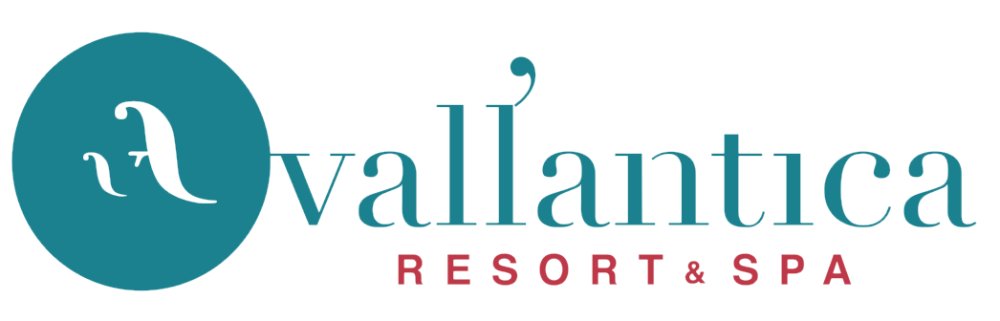

Le Discipline


Il motto della scuola
“Se ti arrendi ora durante gli allenamenti ti arrenderai nel mezzo di un combattimento. Quando avrai imparato ad arrenderti non potrai più farne a meno. Sarà un'abitudine. Un guerriero non si arrende mai. Dai sempre il massimo e combatti per quello in cui credi. Credi in quello che fai; allora sarai forte nel corpo e nella mente. Non ci saranno battaglie ma solo vittorie. Perché nella tua vita incontrerai molti atleti ma pochi guerrieri.” Shifu Luca Primavera
Kung Fu Terni
SHIFU LUCA PRIMAVERA
SHIFU ALESSANDRO BUFI
+39 320 2455584
+39 340 2571421
+39 342 1239787 (solo Whatsapp)
kungfuterni@gmail.com
primavera.luca@alice.it
alessandro.bufi147@gmail.com
PALESTRA PRIVILEGE
Via Arnaldo Maria Angelini 8 -05100- Terni
Main Sponsor

Silver Sponsor
Compila il modulo e sarai contattato per conoscere il tipo di attività relativa al mondo del kung fu più adatta alle tue esigenze.